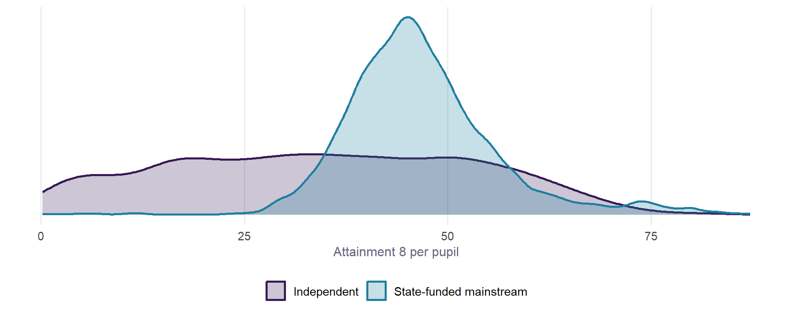
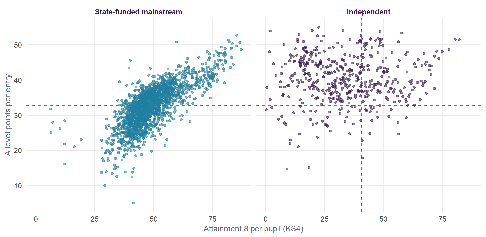
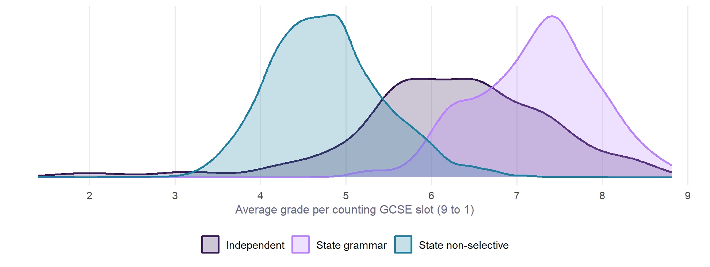
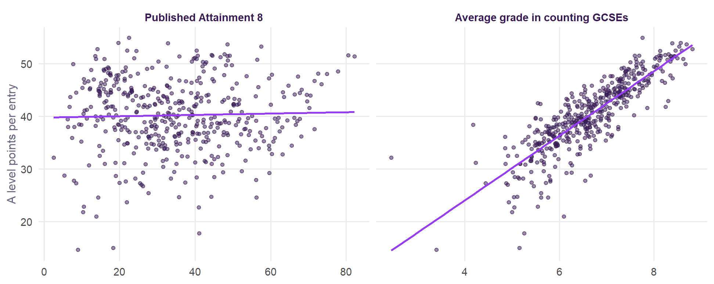
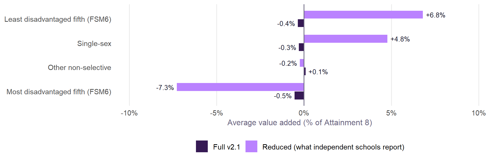
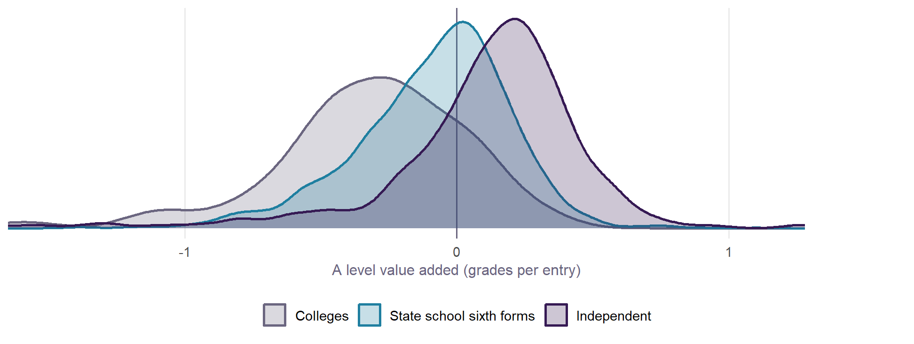

Independent schools
What the published data say about England’s independent schools, and how far a fair comparison with the state sector can go.
ImportantIn short
- There is no value added at 16 for independent schools, and one cannot fairly be built from published data. The two things that matter most in Value Added v2.1 are each school’s prior attainment and its disadvantage. Neither is published for independent schools, and nor is absence.
- Their published GCSE results are not comparable either, but they can be completed. Many independent schools enter IGCSEs that do not count in the performance tables, so their Attainment 8 is often far below what their pupils achieve. A school’s average grade in the GCSEs that do count stands in well for the rest (Section 4). On it, the typical independent school sits between non-selective state schools and grammar schools.
- One comparison does exist: value added at A level. DfE publishes 16-18 A level value added, from each student’s GCSE results, for 487 independent schools on the same basis as state sixth forms. It is the fair comparison available now, with caveats of its own.
The sector
England has 1,606 open independent schools. This page is about the 898 mainstream independent schools that teach secondary ages, with about 396,000 pupils of all ages between them. The 2024/25 performance tables list 901 independent schools with pupils at the end of key stage 4 (a few have since closed or changed): 53,824 pupils, against 604,761 in state-funded mainstream schools, about 8% of the cohort. Independent special schools are a different sector and are left out.
- Inspection: 652 are inspected by the Independent Schools Inspectorate (members of the associations) and 246 by Ofsted.
- Admissions: 213 say they are selective, 229 non-selective, and 380 give no policy.
- Single-sex: 160 girls’ schools and 91 boys’ schools.
- Boarding: 286 have boarders.
What is published
Value Added v2.1 sets each school’s results against what its intake and setting would predict. This is what exists for independent schools, term by term:
| In the v2.1 model | State-funded schools | Independent schools |
|---|---|---|
| Outcome: Attainment 8 | Published | Published for 86%, but IGCSEs and other unapproved qualifications score nothing (Section 3); it can be approximately completed (Section 4) |
| Prior attainment (KS2) | Published | None. Many pupils never sat KS2 tests, and none is published |
| Disadvantage (FSM6) | Published | None. Fee-paying schools have no free school meals measure |
| Absence | Published | None. Independent schools are not in the absence collection |
| English as an additional language | Published | None. Not collected in the independent schools census |
| Pupil mobility | Published | None |
| SEN support and EHC plans | Published | Published (median SEN support 18.7%, EHC plans 0.6%, against 14.4% and 3.4% in state secondaries) |
| Neighbourhood education | Built from where pupils live | Only where the school is. Pupils travel further, and some board |
| Admissions, single-sex, sixth form | Published | Published (GIAS), though many give no admissions policy |
| Ethnicity, young carers | Published | None |
The January 2026 school census publishes headcounts by age and sex, and boarders, for every independent school. It publishes none of the measures of who the pupils are: free school meals, first language, ethnicity and young carers are all blank. The only measures of need are SEN support and EHC plans. Independent schools identify more SEN support than state schools, mostly specific learning difficulties, and have far fewer EHC plans.
The Attainment 8 problem

Independent schools, nearly all fee-paying and many selective, would be expected to have results well above the state average. Their published Attainment 8 has a median of 34.5, below the state median of 45.6, and 27% of independent schools score under 20. That does not reflect what their pupils achieve. Since 2017 the performance tables count only approved qualifications, and many independent schools enter their pupils for international GCSEs (IGCSEs), which are not on the list. A pupil with a string of top IGCSE grades can score next to nothing.
The same schools’ A level results show it:

In state schools, a school’s Attainment 8 and its A level results go together (correlation 0.76). In independent schools they are unrelated (0.03). 269 of the 461 independent schools with both (58%) are in the bottom quarter of state schools on Attainment 8 and above the state median at A level. Published Attainment 8 cannot be used to compare an independent school with anyone as it stands.
Completing Attainment 8
The performance tables do not publish IGCSE results, so no published data put IGCSE grades and Attainment 8 side by side. But they do publish Attainment 8 in its parts, and that is enough to fill in what is missing.
Attainment 8 is English (counted twice), maths (counted twice), three EBacc slots (sciences, languages, humanities) and three open slots. The tables publish each school’s points in each, and how many of the EBacc and open slots its pupils fill on average. An IGCSE fills nothing. In independent schools:
- English and maths: 33% score nothing for English and 43% nothing for maths. Every state school scores something for both.
- The other six slots: pupils fill 4.4 on average, against 5.6 in state schools.
A school’s average grade per filled slot (the EBacc and open points divided by the slots filled) is measured the same way in both sectors. Unlike Attainment 8, it does not fall when slots are empty. It assumes a school’s pupils do about as well in their IGCSEs as in their GCSEs. To complete Attainment 8, English and maths are predicted from that grade, using the relationship in state schools, where they can always be counted:
\[\text{Attainment 8}_\text{completed} = 2\,\widehat{\text{English}} + 2\,\widehat{\text{maths}} + 6\,g\]
Does it work? Two tests:
- In state schools, a school’s grade in its other subjects predicts its English grade with R² 0.88 and its maths grade with R² 0.90, to within about a third of a grade. The completed measure correlates with the real Attainment 8 at 0.98.
- In independent schools, the average grade in counting GCSEs restores the link with the same schools’ A level results. It correlates with them at 0.84, against 0.03 for published Attainment 8, and 0.77 in state schools.


| Schools | Published Attainment 8 | Average grade in counting GCSEs | Completed Attainment 8 | |
|---|---|---|---|---|
| Independent | 723 | 35.9 | 6.3 (5.6 to 7.0) | 62.3 |
| State grammar | 163 | 73.1 | 7.3 (6.7 to 7.7) | 73.0 |
| State non-selective | 3,107 | 45.2 | 4.7 (4.3 to 5.2) | 47.0 |
On the completed measure, the typical independent school’s pupils average about grade 6.3, against 4.7 in non-selective state schools and 7.3 in grammar schools: an Attainment 8 of about 62, between the two. That is attainment, not value added. It says nothing about what the schools add, because the intake terms are still missing (Section 5). Three cautions:
- It assumes IGCSE grades match GCSE grades. If a school’s pupils do better or worse in their IGCSEs than in its GCSEs, the completed figure is off by that much. The A level check above suggests it is close on average, not for every school.
- Pupils with nothing counted are invisible. A pupil who sat only IGCSEs adds no grade to the average. 7% of independent schools fill too few slots to compute it at all.
- It is one year, provisional. The method can be repeated on each year’s tables.
Could a reduced model stand in?
If the missing terms cannot be had, one could fit a model on only what independent schools do report (their neighbourhood, SEN, size, sex, selection, sixth form, region and setting) and compare results with that. We can test this where the answer is known: on state schools, against the full v2.1 model.
| Full v2.1 | Reduced | |
|---|---|---|
| Variation in results explained (R²) | 84% | 62% |
| Correlation of the reduced model's value added with v2.1's | 1 | 0.54 |
| Schools put in the same fifth of value added | 34% | |
| Of the reduced model's top fifth, also in v2.1's top fifth | 42% |
Even among state schools, where the full data exist to check it against, the reduced model gets value added badly wrong. It puts only 34% of schools in the right fifth. It does not fail at random: without a measure of disadvantage it credits schools for their intake.

The least disadvantaged fifth of state schools have value added of -0.4% on the full model and +6.8% on the reduced one: the reduced model mistakes an advantaged intake for good teaching. Independent schools’ intakes are more advantaged than any state school’s, and selected by fees and often by entrance exam. A reduced model would credit them with that advantage, by more than it does the most advantaged state schools, and there is no published measure to correct it.
| Left out | R² | Correlation of value added with the full model |
|---|---|---|
| Prior attainment (KS2) | 82% | 0.94 |
| Disadvantage (FSM6) | 83% | 0.97 |
| Absence | 77% | 0.85 |
| EAL | 84% | 0.99 |
| Mobility | 83% | 0.97 |
Each of the missing terms costs something on its own; together, as the reduced model shows, they cost most of the measure.
The comparison that exists: A level value added
DfE publishes value added at 16-18 for every school and college with A level students, independent schools included. It sets each student’s A level grades against those of students nationally with the same GCSE results, and averages by school, in grades per A level entry. Because it starts from each student’s own prior results, it allows for the largest thing the KS4 comparison cannot.

| Provider | With a value added | A level students | Median (grades per entry) | Middle half | A level points per entry (median) | Clearly above zero | Clearly below |
|---|---|---|---|---|---|---|---|
| Independent | 487 | 36,216 | +0.17 | -0.01 to +0.31 | 39.8 | 49% | 9% |
| State school sixth forms | 1,906 | 204,507 | -0.05 | -0.24 to +0.10 | 32.8 | 21% | 33% |
| Colleges | 135 | 56,417 | -0.29 | -0.49 to -0.08 | 29.3 | 11% | 71% |
On this measure the typical independent school adds +0.17 of a grade per A level entry, against -0.05 in state school sixth forms. 49% of independent schools are clearly above zero, against 21% of state sixth forms. The spread within each sector is wider than the gap between them: many state sixth forms do better than the typical independent school.
What it does and does not allow for:
- Prior attainment, yes, but GCSEs only. DfE’s technical guidance is explicit. For A levels, “students’ prior attainment is based on their average attainment in GCSEs only”, and only qualifications “approved for reporting in key stage 4 performance measures” count. So IGCSEs are left out of the baseline. A student with a mix is measured on their GCSEs alone. A student with only IGCSEs has no prior attainment and is left out of the value added, since a student “must have results at the end of key stage 4”. If many independent pupils were left out this way, independent schools would have fewer value-added entries per A level student than state schools. They have slightly more (2.70 against 2.58), so most of their students are in. For the many who mix, the baseline rests on their GCSE subjects only.
- Disadvantage, no. DfE’s 16-18 value added has no adjustment for disadvantage or context. At GCSE the v2.1 model finds disadvantage worth a good deal even after prior attainment, so some of the independent schools’ lead is likely to be their intake rather than their teaching.
- Who stays on, no. Sixth forms choose their students and students choose sixth forms. The two sectors’ A level cohorts are selected differently.
- One year is noisy. Three-year averages are published alongside, and are steadier.
Is a comparison possible?
| Comparison | Possible? | Why |
|---|---|---|
| Value added at 16 on the v2.1 basis | No | No prior attainment, disadvantage or absence for independent schools, and an incomplete outcome |
| Published GCSE results (Attainment 8) | No | IGCSEs and other unapproved qualifications score nothing, so published figures are far too low for many schools |
| Completed Attainment 8 (average grade in counting GCSEs) | Yes, as attainment | Measured the same way in both sectors, validated against state schools and against independent schools’ own A level results; assumes IGCSE grades match GCSE grades; attainment, not value added |
| A reduced contextual model at 16 | Not credibly | It can be computed, but in the state sector it gets value added badly wrong and credits advantaged intakes; independent intakes are the most advantaged of all |
| A level value added (16-18) | Yes, with caveats | Published by DfE for 487 independent schools on the same basis as state sixth forms; allows for prior attainment, not disadvantage or selection into the sixth form |
| A level results, raw | Descriptive only | Comparable qualifications, but no allowance for intake |
What would make a fair comparison at 16 possible
All of these are about what is published, not about any individual pupil’s records:
- Count what independent pupils sit. Publish Attainment 8 with IGCSEs and other GCSE-equivalent certificates included, beside the official figure, so the outcome is complete.
- A starting point. A prior-attainment measure for independent schools’ pupils at entry, whether KS2 or an agreed baseline.
- Who the pupils are. Some measure of disadvantage: bursary and fee-remission rates are the nearest equivalent to free school meals. First language, at least, as for state schools.
- Attendance. Absence is the largest school-level term in v2.1, and independent schools are outside the collection.
Until then, the honest comparison is at A level, and it is a comparison of what sixth forms add to students who arrive with the same GCSEs, not of schools.
Sources
- Get Information about Schools (GIAS), all establishments, June 2026.
- DfE, Schools, pupils and their characteristics, January 2026, school-level data.
- DfE, Special educational needs in England, January 2026, school-level data.
- DfE, Compare school and college performance: KS4 (provisional) and 16-18 (A level value added and results) 2024/25.
- DfE, 16 to 19 accountability measures: technical guidance, September 2026: value added methodology, prior attainment, and independent schools.
Built by R/10_independent.R.